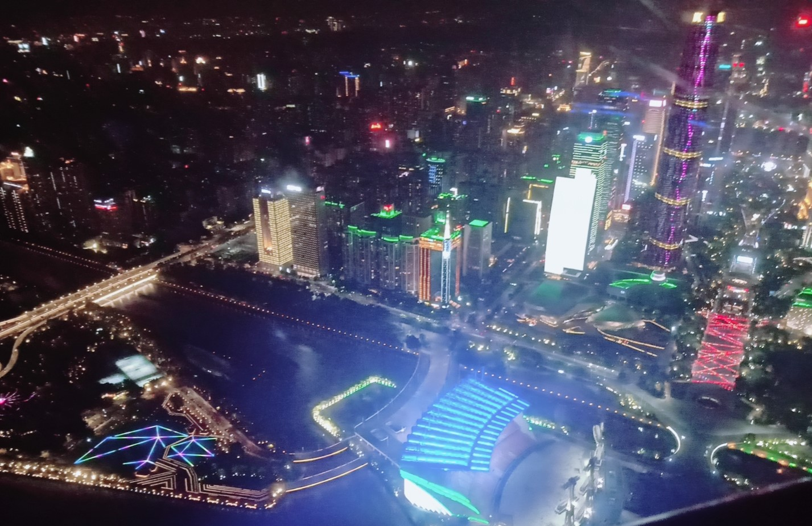

TRAVEL IN THE PAST
选择了让我印象深刻的地方为你介绍

武大樱花
(拍摄于樱花大道)
(拍摄于樱花大道)
武大校内樱花约1000株，以日本樱花、山樱花、垂枝大叶早樱和红花高盆樱4种为主。
从二十八株国耻之花，到千株人文之花，不仅见证了中日两国的关系变化，更承载了武大的历史底蕴。

长沙岳麓山
(拍摄于岳麓山索道上)
(拍摄于岳麓山索道上)
武大校内樱花约1000株，以日本樱花、山樱花、垂枝大叶早樱和红花高盆樱4种为主。
从二十八株国耻之花，到千株人文之花，不仅见证了中日两国的关系变化，更承载了武大的历史底蕴。

广州塔
(拍摄于广州塔摩天轮)
(拍摄于广州塔摩天轮)
广州塔（英语：Canton Tower）又称广州新电视塔，昵称小蛮腰，其位于中国广东省广州市海珠区（艺洲岛）赤岗塔附近，
距离珠江南岸125米，与珠江新城、花城广场、海心沙岛隔江相望。
广州塔塔身主体高454米，天线桅杆高146米，总高度600米。是中国第一高塔。


迪士尼城堡
(拍摄于上海迪士尼)
(拍摄于上海迪士尼)
上海迪士尼乐园占地1.16平方公里，
主题园区分为米奇大街、奇想花园、探险岛、宝藏湾、明日世界、梦幻世界、迪士尼·皮克斯玩具总动员。
拥有迪士尼城堡、漫威英雄总部、巴斯光年星际营救等游乐项目。